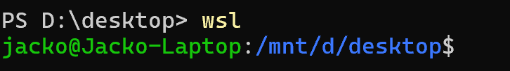
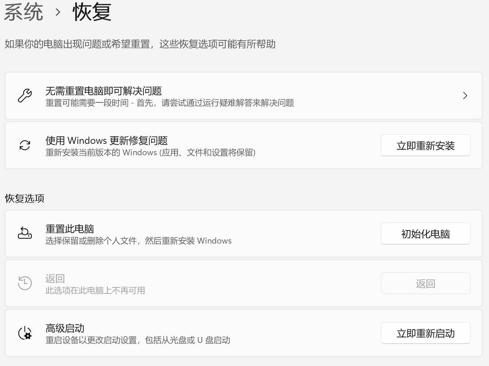

随着我们学习的编程语言越来越多，使用的各种各样的工具也越来越多，我们的电脑上就需要配置越来越多的环境，且不论环境之间是否具有冲突，单从复杂的系统环境来看，都会让电脑变的臃肿，最终就会出现牵一发而动全身的情况（All in boom）。
然而，目前win平台对于此并没有过多的方案选择，基本只有
docker、Windows沙盒、传统VM以及WSL三个选项来管理你的系统环境，让系统变得更加清爽。
Windows沙盒只能在专业版中使用，鉴于大部分人都没有专业版，故并不推荐；传统VM由于运行在应用层，在进行资源调度以及数据共享时极不方便，故不推荐；docker，由于docker并没有win的原生版本，即使是windows版本也是基于wsl的，于是乎你就在装了一个wsl的前提下，又安装了个docker，在神级插件Dev-Container辅助下，确实很不错，由于笔者没有尝试过，所以不做评价。
WSL也是一种虚拟机，由于win的原生支持，其不仅能够与win进行极其方便的数据共享，还能够方便的与宇宙第一IDEVScode进行一触即连，优雅方便地开始你的代码开发，最重要的是，其能够完美地调用所有的计算资源而不需要手动调整，实在是管理系统环境的不二之选。 2024.11.12 笔者的笔记本坏了，需要重装系统，尽管重要数据能够通过硬盘、网盘来备份，但是一些系统环境要重新配置还是很费时间的。由于笔者已经投入了wsl怀抱，这时候只需要将所有的子系统导出，然后重要数据都放在同步盘里，就能够非常方便地重装系统然后恢复原来的环境了。
启用基于Linux的子系统功能
-
在 Win10 or Win11 中，使用任务栏的搜索功能，搜索“启用或关闭windows功能”
单击进入下图窗口，启用 “适用于Linux的Windows子系统功能” 和 “虚拟机平台”

安装 WSL 子系统
-
使用 cmd，输入以下命令更新 WSL
1WSL --update -
启用 WSL2 —— 目前默认使用 WSL2，但建议手动启用一下更为保险，WSL2 的功能比 1 更完善也更加稳定
1WSL --set-default-version 2 -
查看可用的WSL系统版本，并安装ubuntu系统 —— 这里安装的是22.04版本，没特殊需求使用22.04版本就够了
1 2WSL -l -o WSL --install Ubuntu-22.04 --web-download这里请务必加上
--web-download，否则他会从MS Store下载，亲测奇慢无比接下来只需跟着引导创建用户然后，设置密码即可，之后你可以在CMD或者Power Shell输入WSL来进入子系统

意外情况
不出意外的话，这时候可能就出意外了
-
意外一
1WSL -l -o如果没有反应，这一般是那堵无形的墙堵住了你的去路。
解决方法: 尝试换一个网绕过去，或者装个梯子爬过去
ps：经笔者尝试，目前国内是可以直接访问安装的，如果不行，配置一下DNS就好了
推荐：首选119.29.29.29 备用8.8.8.8
-
意外二
1WSL --install Ubuntu-22.04 --web-download安装系统失败，首先尝试根据官方文档中的操作一步一步来：旧版 WSL 的手动安装步骤 | Microsoft Learn
如果仍然安装系统失败，你可以尝试使用windows更新修复问题，然后重试上述步骤。
还有可能是因为bios未启用cpu虚拟化。 —— 然而 笔者在使用VM时显示不支持cpu虚拟化，但却能够使用WSL
此时依然不行的话，要么就是系统不支持，要么就是硬件不支持，可以尝试重装系统或者更换电脑解决